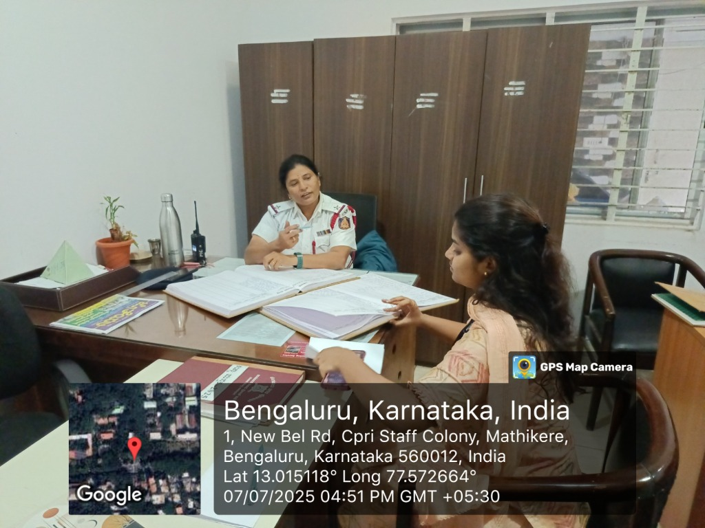
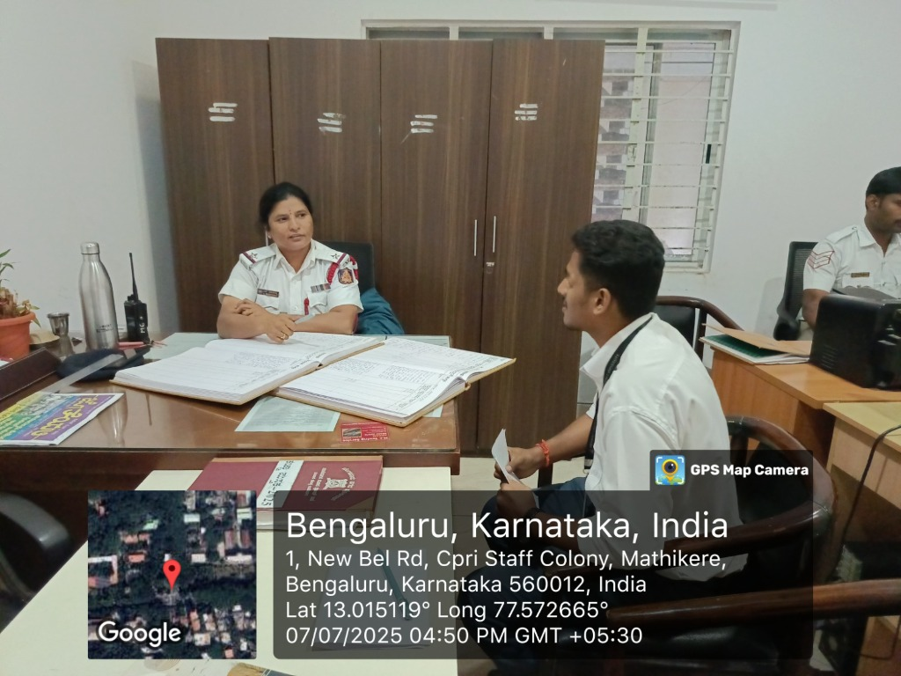
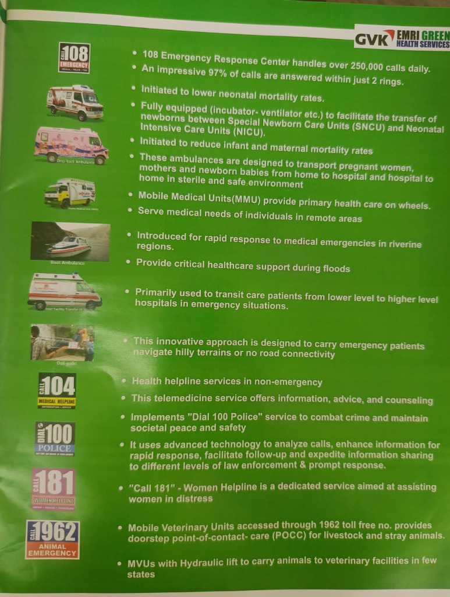
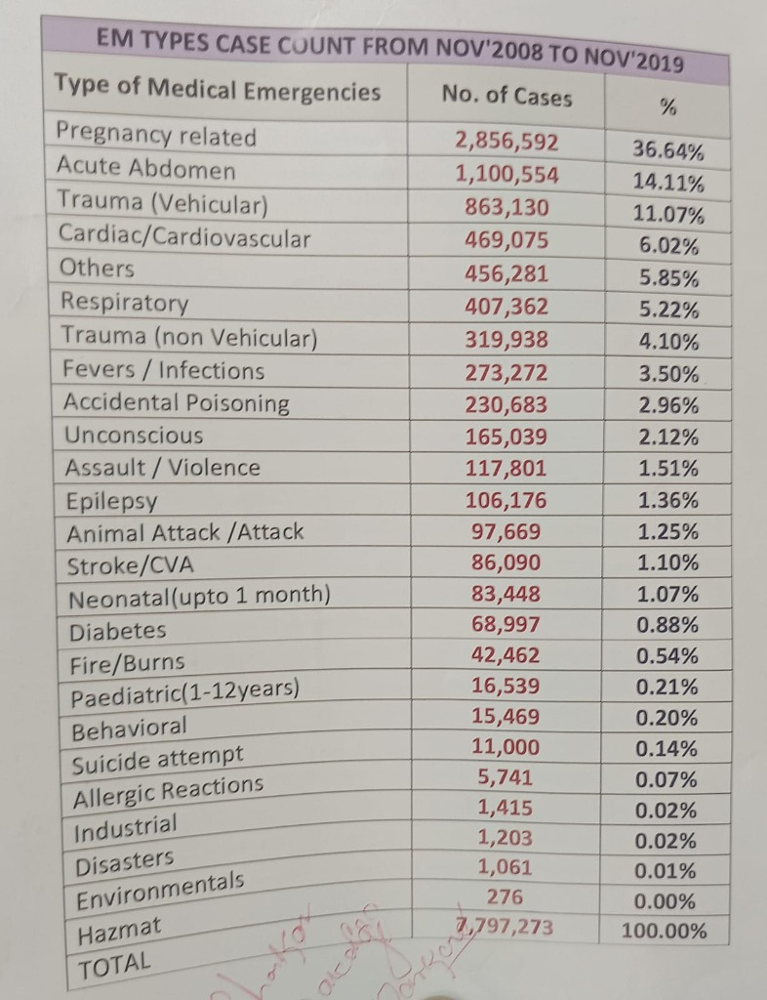
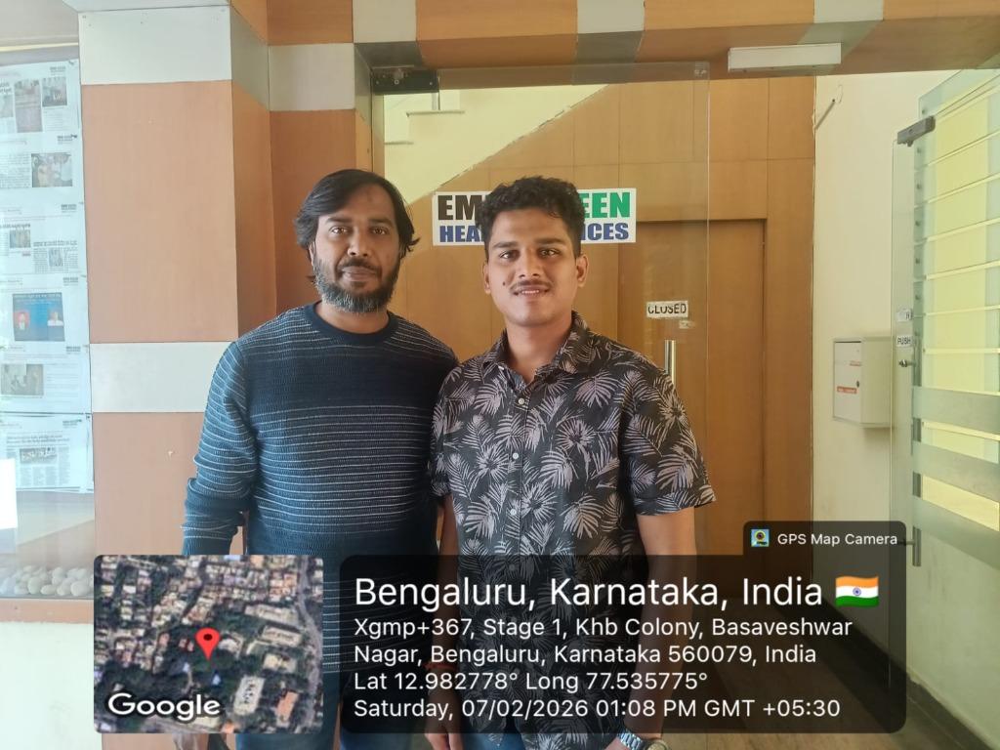
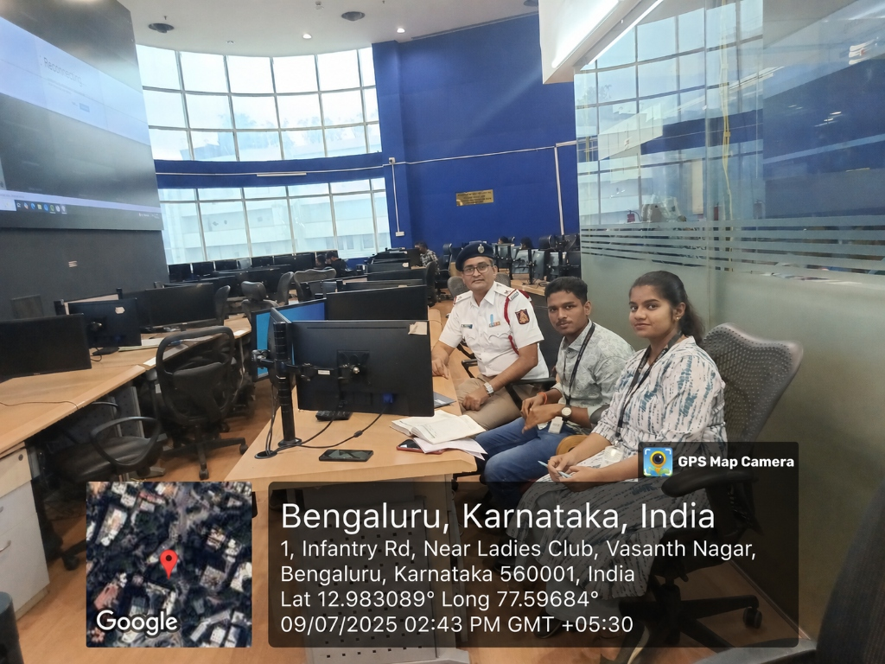
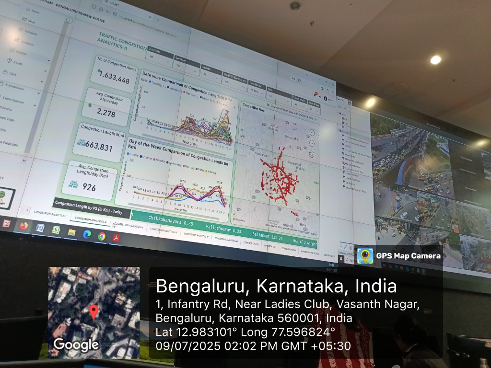
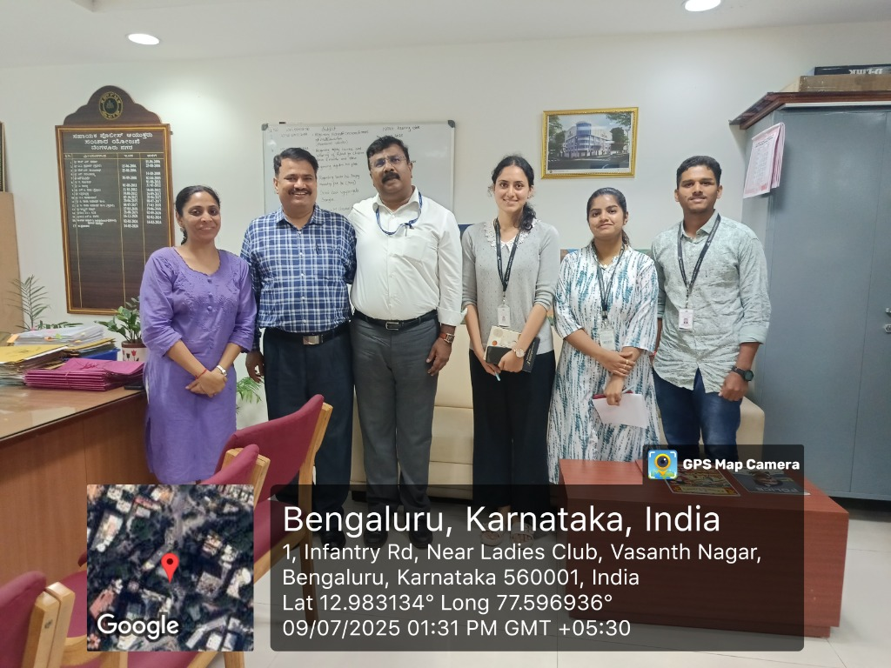
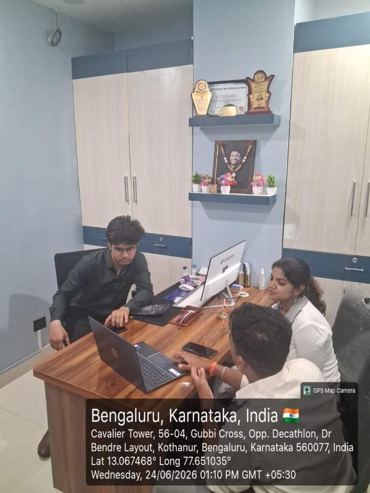

Understanding Real-World Challenges
Every meaningful innovation begins with listening. Before developing EMSTRAP, our team conducted extensive field research by visiting emergency service stakeholders, observing operational workflows, and engaging directly with professionals.
Why We Started
Emergency response involves multiple organizations working together under time-critical conditions. While each stakeholder performs an essential role, our objective was to understand how communication, coordination, and operational processes function collectively during emergencies.
Rather than relying solely on online research or assumptions, we conducted field visits and interacted directly with professionals working in emergency response. These conversations helped us validate real-world challenges and identify opportunities where technology could improve emergency coordination.
This research became the starting point of EMSTRAP.
Research Methodology
We followed a field-first research approach to understand the complete emergency response ecosystem. This includes:
Research Overview
| Research Period | Stakeholders Visited | Research Objective | Outcome |
|---|---|---|---|
| Initial Research Phase | Police, Hospitals, Traffic Management Centre, EMRI Green Health Services (108) | Understand emergency response challenges and operational workflows | EMSTRAP Concept & Platform Architecture Finalized |
Field Research Journey
Police Department Visit
Objective: To understand how law enforcement manages accidents and emergency incidents.
Areas of Discussion: Accident reporting, incident response procedures, police coordination, emergency communication, and public safety operations.
Key Insight
Efficient communication between emergency stakeholders is essential for coordinated incident management.

Police Department Consultation (Lady Officer & Pink Stakeholder)

Police Department Consultation (Lady Officer & White Stakeholder)
EMRI Green Health Services (108)
Objective: To study ambulance dispatch operations and understand the emergency medical response workflow.
Areas of Discussion: Emergency call handling, ambulance dispatch process, resource allocation, response time challenges, communication with hospitals, and operational workflow.
Key Insight
Timely information and effective coordination between emergency responders and healthcare facilities play an important role in improving emergency response efficiency.

EMRI 108 Dispatch Operations & Strategy

Emergency Response Case Types Distribution

EMRI Green Stakeholder Office Door Consultation Visit
Traffic Management Centre (TMC)
Objective: To understand how traffic management systems influence emergency vehicle movement and identify opportunities to improve emergency mobility.
Areas of Discussion: Emergency vehicle movement, traffic congestion during emergencies, signal management, incident monitoring, and coordination with emergency responders.
Key Insight
Traffic conditions significantly influence emergency response time. Better coordination between traffic authorities and emergency responders can improve ambulance mobility during critical situations.

TMC Control Room Sync

TMC Wall Monitoring Dashboard

Infantry Road Traffic Police Consultation Sync
Hospital Research
Objective: To understand emergency department preparedness and patient handover processes.
Areas of Discussion: Emergency room readiness, patient information before arrival, resource preparedness, ambulance-to-hospital communication, and clinical coordination.
Key Insight
Providing hospitals with timely pre-arrival information can help emergency departments prepare resources before the patient reaches the hospital.

Hospital ER Operations Consultation
Key Challenges Identified
Ambulance Response Delays
Emergency vehicles experience significant delays due to traffic congestion, manual dispatch routing, and lack of real-time multi-agency coordination.
Misuse of Sirens & Privileges
Concerns regarding the misuse of ambulance sirens in non-critical situations, reducing public compliance and trust in emergency signaling.
Limited Pre-Arrival Hospital Alerts
Hospitals operate blindly without patient telemetry, leaving emergency rooms under-prepared for critical handovers during the Golden Hour.
Fragmented Communication
Police, hospitals, and ambulance providers operate on siloed legacy communications networks, increasing response delays.
Traffic Coordination Challenges
Absence of dynamic green light corridors or real-time communication between transit responders and municipal traffic management centers.
Limited Situational Awareness
Control rooms operate without geo-tracking dashboard visibility of available ambulances, police units, or ICU beds.
From Research to Innovation
| Research Finding | EMSTRAP Solution |
|---|---|
| Ambulance Response Delays | AI-assisted emergency coordination and intelligent dispatch support |
| Lack of Hospital Alerts | Real-time hospital notification system |
| Fragmented Communication | Unified emergency coordination platform |
| Traffic Coordination Challenges | Smart routing and emergency traffic coordination support |
| Limited Situational Awareness | Live tracking and operational dashboards |
| Multi-Agency Coordination | Integrated platform connecting emergency stakeholders |
Research Impact: What This Helped Us Achieve
Validated Real-World Problems
Every challenge addressed by EMSTRAP is based on practical observations and stakeholder discussions.
Built Around User Needs
The platform architecture was designed using insights collected from emergency service professionals rather than assumptions.
Stronger Product Strategy
The research phase directly influenced the development of EMSTRAP Connect, Ride, Shield, and Command.
Long-Term Vision
Understanding existing emergency workflows helped establish a scalable roadmap for future innovations.
Our Biggest Takeaway
"Technology alone cannot improve emergency response. Effective emergency management requires better coordination, timely information sharing, and seamless collaboration among all stakeholders. This understanding became the foundation for building EMSTRAP."